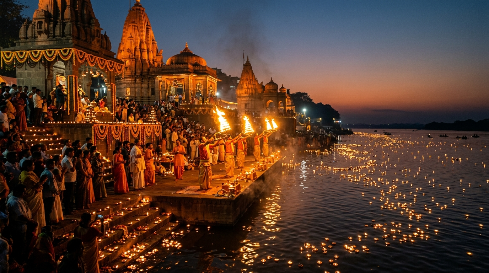

सिंहस्थ कुंभमेळा नाशिक-त्र्यंबकेश्वर
धर्म, संस्कृती आणि मोक्षाचा पवित्र महासंगम
गोदावरी मातेच्या पावन तीरावर शतकानुशतके वाहणारी भक्तीची अखंड अमृतधारा. नाशिक आणि त्र्यंबकेश्वर सिंहस्थ यात्रेचे संपूर्ण अधिकृत मार्गदर्शक. "गंगा द्वारे कुशावर्ते बिल्वके नीले पर्वते। स्नात्वा च अश्वमेधस्य फलं प्राप्नोति मानवः॥"
शाही स्नान आणि पर्वणी दिनदर्शिका
पवित्र गोदावरी तीरावरील शाही स्नान मुहूर्त, आखाड्यांच्या शाही मिरवणुका आणि ग्रह-ताऱ्यांचे शुभ योग.
गोदावरी दीपदान • व्हर्च्युअल दीप अर्पण
गोदावरी मातेच्या पावन प्रवाहावर आपले नाव आणि संकल्पासह सुवर्णदीप अर्पण करा आणि जगभरातील लाखो भाविकांसोबत पुण्य संपादन करा.
सद्भावनेचे दीपदान करा
आपला आवडता दीप निवडा, आपले नाव व कुल गोत्र प्रविष्ट करा, मनोभावे संकल्प निवडा आणि गोदावरी नदीत दीप सोडा.
दर्शनीय स्थळे • नाशिक व त्र्यंबकेश्वर
१०वे ज्योतिर्लिंग, रामायणकालीन पावन भूमी, प्राचीन बौद्ध लेणी, हनुमानाची जन्मभूमी आणि जागतिक ख्यातीच्या द्राक्षबागा.
नाशिकला कसे पोहोचावे • संपूर्ण प्रवास मार्गदर्शक
समृद्धी महामार्ग, रेल्वे सेवा, विमानतळ आणि कुंभमेळ्यासाठी विशेष मोफत ई-बस शटल कॉरिडोअर.
Nashik Ozar Airport (ISK) Connectivity
Located 20 km north of the city at Ozar, Nashik Airport connects directly to Hyderabad, Ahmedabad, Belagavi, and Delhi. For international pilgrims, Mumbai Chhatrapati Shivaji Maharaj International Airport (BOM, 175 km) and Shirdi International Airport (SAG, 85 km) offer seamless connections with AC taxi corridors.
-
Pre-Paid Taxi Booths: Dedicated counters outside Arrivals with fixed fares to Ramkund & Trimbakeshwar.
-
Helicopter Joyrides & Heli-Taxi: Special helipads designated near Nilgiri Baug and Gangapur for rapid transfer.
Nashik Road Central Railway Station (NK)
Nashik Road Station is a major grade-A stop on the Central Railway mainline. Over 100 long-distance express trains connect Nashik to Mumbai (CSMT/Dadar), Pune, Delhi, Kolkata, Varanasi, and Gorakhpur. During Kumbh Mela, Indian Railways operates dozens of daily special Kumbh Superfast trains.
-
Key Trains: Mumbai-Nashik Vande Bharat Express, Panchavati Express, Godavari Exp, Tapovan Exp, Punjab Mail, Pushpak Exp.
-
Station to Ramkund: Direct city buses, auto-rickshaws, and 24x7 app cabs (8 km, ~20 mins).
Samruddhi Mahamarg & National Highways
Nashik boasts world-class road access. The Hindu Hrudaysamrat Balasaheb Thackeray Maharashtra Samruddhi Mahamarg provides rapid 120 km/h expressway transit from Nagpur and Mumbai. The Mumbai-Nashik NH160 via picturesque Kasara Ghat is a 4/6-lane scenic highway.
-
From Mumbai: 165 km | ~3.25 hrs via Samruddhi / NH160.
-
From Pune: 210 km | ~4.25 hrs via Pune-Nashik NH60 (Sinnar corridor).
Special Kumbh Perimeter E-Buses & Ghat Transits
During Shahi Snan days, private vehicles are held at outer satellite parking terminals. Free air-conditioned electric buses (EVs) operate around the clock on dedicated green corridors transporting pilgrims directly to the Ramkund and Tapovan entry points.
-
Ring Road Parking Hubs: Adgaon, Vilholi, Girnare, and Sinnar Phata hubs with food stalls and cloakrooms.
-
Ghat E-Rickshaws: Free dedicated battery shuttles for senior citizens and differently-abled pilgrims.
प्रवास अंतर व मार्ग गणक (Route Calculator)
आपले शहर निवडून प्रवासाचे तास, सर्वोत्तम महामार्ग आणि रेल्वे गाड्यांची माहिती मिळवा.
सॅटेलाइट पार्किंग हब
शहराबाहेर सुरक्षित, सीसीटीव्हीयुक्त अवाढव्य पार्किंग तळ, विश्रामगृहे आणि स्वच्छ प्रसाधनगृहे.
मोफत वातानुकूलित ई-बसेस
पार्किंगवरून रामकुंड आणि तपोवन प्रवेशद्वारापर्यंत २४ तास मोफत धावणाऱ्या पर्यावरणपूरक बसेस.
पादचारी घाट कॉरिडोअर
सावलीयुक्त मार्ग, शुद्ध थंड पिण्याच्या पाण्याचे बूथ आणि दर ३०० मीटरवर आपत्कालीन प्रथमोपचार केंद्र.
भाविक सुविधा आणि आपत्कालीन कक्ष
२४ तास वैद्यकीय सेवा, मोफत अन्नछत्रे, घाट सुरक्षा आणि हरवलेल्या व्यक्तींसाठी आधुनिक मदत केंद्र.
२४ तास फिरते रुग्णालय
अतिदक्षता कार्डियाक रुग्णवाहिका, मोफत आयसीयू बेड्स आणि तज्ज्ञ डॉक्टरांचे पथक २४ तास तत्पर.
📍 Ramkund, Trimbak & Tapovanमहा अन्नछत्र (प्रसाद भोजन)
विविध धार्मिक संस्था आणि आखाड्यांमार्फत सर्व भाविकांना शुद्ध सात्विक महाप्रसाद मोफत दिला जातो.
📍 Tapovan, Panchavati, Trimbak Roadगोताखोर व घाट सुरक्षा पथक
जल सुरक्षेसाठी प्रशिक्षित जीवरक्षक, मोटर बोट, सुरक्षा जाळ्या आणि लाइफ जॅकेट्स तैनात.
📍 Ramkund, Laxman Kund, Kushavartaहरवले-सापडले बहुभाषिक कक्ष
कुटुंबापासून दुरावलेल्या व्यक्तींचा शोध घेण्यासाठी एआय फेशियल रेकग्निशन आणि आधुनिक कंट्रोल रूम.
📍 CBS Stand, Ramkund & Railway Station